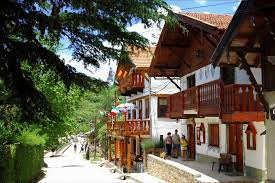

Rodeada de bosques y arroyos, a unos 89 kilómetros al sur de Córdoba Capital se encuentra Villa General
Belgrano. Esta comuna serrana nació de la combinación de tradiciones de los pueblos nativos e inmigrantes, en su
mayoría alemanes. Hoy es uno de los atractivos turísticos más importantes de la provincia, contando con
numerosos festejos característicos.
En octubre, la Fiesta de la Cerveza invade con su atmósfera cosmopolita: llegan personas de todos lados para
compartir una de las tres Oktoberfest
Más allá de los festejos, durante todo el año se pueden emprender caminatas por entornos de pura naturaleza. También se puede visitar sus museos, subir al mirador para obtener panorámicas a 360° o disfrutar de parques de juegos con los más chicos. A la vez, no pueden pasar por desapercibidos sus restaurantes y casas de té y cafés; sus platos centroeuropeos, las cervezas tiradas y la pastelería artesanal.
